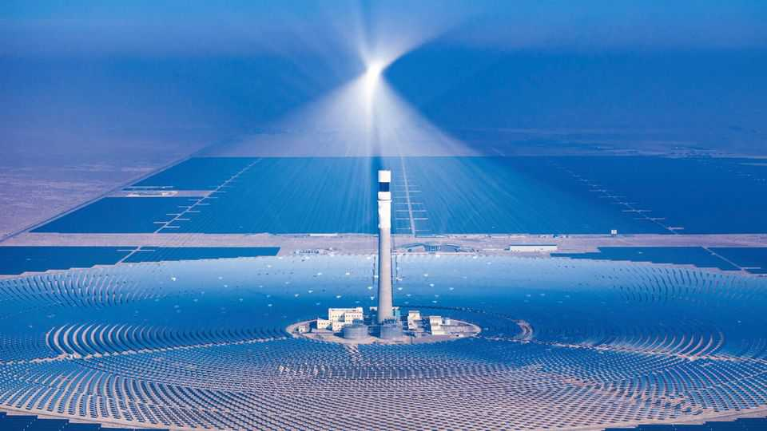
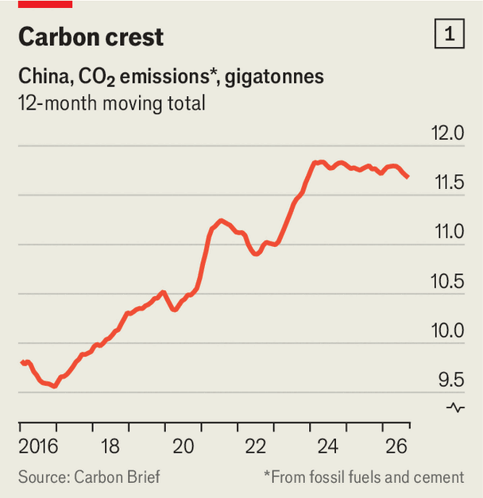
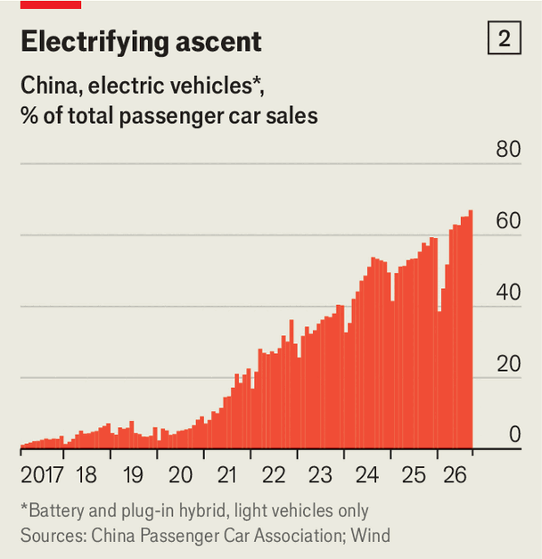
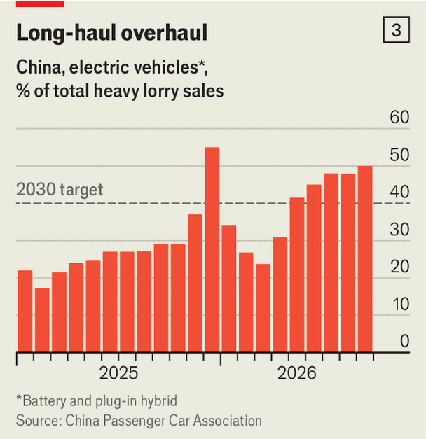

China’s carbon-dioxide emissions have begun to fall
Its progress with electrification has been a big help

Nov 12th 2026
In the effort to slow the rise in global temperatures, no country matters more than China. It has been the biggest annual emitter of carbon dioxide for the past 20 years; its multitudes of factories, steel mills, cars and power plants released over 12bn tonnes of the gas last year, or nearly one-third of the world’s total. Still, that was a sliver less than the year before. In recent months, that fall has begun to speed up.
Data released last week by the Centre for Research on Energy and Clean Air (CREA), a think-tank in Finland, show that China’s carbon-dioxide emissions dropped by 3.1% year-on-year in the third quarter of this year (see chart 1). The last time they fell so quickly was in 2022. That was during the covid-19 pandemic: lockdowns had stalled China’s economy. This time economic growth has picked up a little.

So Chinese officials have some cheering news to offer COP31, the annual UN climate summit which began in Turkey on November 9th and will end on the 20th. They might also boast that China’s exports of clean technologies are helping others to decarbonise. To be sure, the decline in emissions is still small. Yet China emits so much carbon that even little changes can alter the global trend (3.1% of China’s emissions equals 100% of Britain’s).
Some factors that have helped reduce emissions will not last for ever. A campaign to enforce safety standards in coal mines—after an accident in May that killed dozens of workers—pushed up prices of coal, so less of it was burned. The Iran war raised oil prices, to similar effect. Unusually mild weather reduced demand for power.
But a big reason for the fall is that China’s economy needs less fossil-fuel. A property bust has slashed demand for steel and cement, which are produced by burning coal. In the first half of this year the proportion of power supplied by coal plants dropped below 50% for the first time on record. That was enabled by breakneck investment in cleaner sources of energy. As well as plenty of hydro- and nuclear-power plants, China has installed 1,000 gigawatts (GW) of solar capacity since 2022—more than the rest of the world put together—along with over 300GW of wind (twice the total wind capacity in America).

China’s transport is electrifying fast. In September EVs and plug-in hybrids made up two-thirds of passenger car sales, up from a tiny fraction a few years ago (see chart 2). This has helped reduce demand for oil. Sinopec, a state-owned oil giant, expects the country’s oil consumption to fall in 2026 for a third consecutive year, by nearly 4%.
Electrification is tougher for lorries: China has the world’s largest fleet. They have to drive longer distances with heavier loads, so require more-powerful batteries. But Chinese-made lorry batteries have improved enough to meet this need. Half of the heavy-duty lorries sold domestically in September were electric (see chart 3). CATL, a Chinese firm that is the world’s biggest battery maker, has set up hundreds of stations where lorries can swap their batteries for new ones in a few minutes, avoiding delays caused by a lengthy charge mid-journey.
Can China continue to push emissions down? It has promised to become carbon neutral by 2060. That will require the latest quarterly drop not only to be sustained but to accelerate. One cause for concern is that its blistering roll-out of clean technologies has started to taper. Though EVs comprise an ever higher share of new cars, the number sold has been declining for ten months. Subsidies to buyers and EV firms have largely been withdrawn. Officials believe the industry is mature enough to withstand market forces and want uncompetitive firms to fold in order to reduce overcapacity. Cautious consumers are also buying less of everything as the economy continues to falter. All this will slow the rate at which petrol cars are taken off the roads.

During the first nine months of this year China installed less than half the solar power-capacity than it did in the same period of last year. Power firms are becoming more hesitant because they worry they will not make much money, says David Fishman of The Lantau Group, a consultancy based in Singapore. China used to guarantee generous prices for electricity from new solar farms. But since June last year they have had to sell power at market rates. Much of China’s electricity is traded via long-term legacy contracts which tended to favour coal. The grid also wastes much of the clean energy that is plugged into it because it cannot store or move enough of the excess power that is sometimes generated, such as on very sunny days.
China is trying to solve these problems. It is installing solar “power-towers” that can generate around the clock (a recently opened one in the western region of Xinjiang is pictured, previous page). It is building long-distance power lines and introducing electricity pricing that responds to fluctuations in the output of renewable energy. And it is imposing quotas on energy-intensive industries to make them use more green electricity. China’s rapidly proliferating data centres will guzzle an ever bigger share of power output, but the government is trying to steer them towards wind- and solar-rich areas in the west. All this should eventually revive the installation of clean tech. But officials are wary. Power cuts in 2022, blamed on overzealous environmental policies, still haunt many local governments. Even as coal-consumption declines, many of them are building more coal-fired power plants, just in case.
Although many analysts believe that China’s emissions have already peaked, the central government’s deadline for achieving this is not until 2030. There is little chance that it will revise the target: China prefers to underpromise and overdeliver on its climate commitments. The worst outcome would be if local officials and state-owned firms see the next few years as a chance to implement dirty projects while they still can, notes Lauri Myllyvirta of CREA. That would turn a climactic moment in China's green transition into a last hurrah for dirty energy. ■
Subscribers can sign up to Drum Tower, our new weekly newsletter, to understand what the world makes of China—and what China makes of the world.